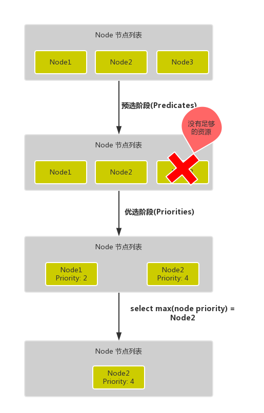
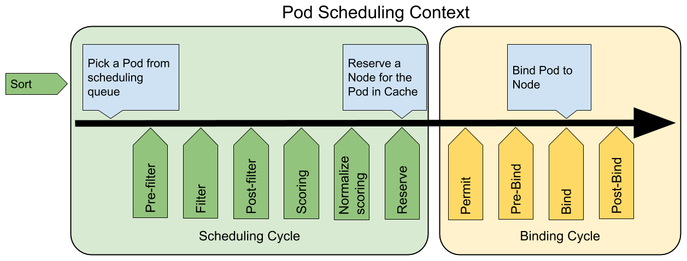
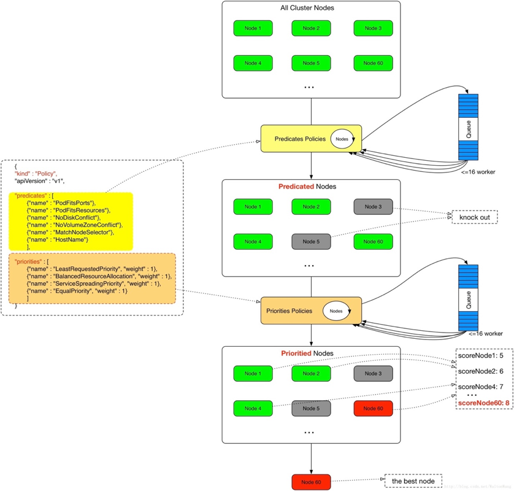

调度器¶
kube-scheduler 是 kubernetes 的核心组件之一，主要负责整个集群资源的调度功能，根据特定的调度算法和策略，将 Pod 调度到最优的工作节点上面去，从而更加合理、更加充分的利用集群的资源，这也是我们选择使用 kubernetes 一个非常重要的理由。如果一门新的技术不能帮助企业节约成本、提供效率，我相信是很难推进的。
调度流程¶
默认情况下，kube-scheduler 提供的默认调度器能够满足我们绝大多数的要求，我们前面和大家接触的示例也基本上用的默认的策略，都可以保证我们的 Pod 可以被分配到资源充足的节点上运行。但是在实际的线上项目中，可能我们自己会比 kubernetes 更加了解我们自己的应用，比如我们希望一个 Pod 只能运行在特定的几个节点上，或者这几个节点只能用来运行特定类型的应用，这就需要我们的调度器能够可控。
kube-scheduler 的主要作用就是根据特定的调度算法和调度策略将 Pod 调度到合适的 Node 节点上去，是一个独立的二进制程序，启动之后会一直监听 API Server，获取到 PodSpec.NodeName 为空的 Pod，对每个 Pod 都会创建一个 binding。

这个过程在我们看来好像比较简单，但在实际的生产环境中，需要考虑的问题就有很多了：
- 如何保证全部的节点调度的公平性？要知道并不是所有节点资源配置一定都是一样的
- 如何保证每个节点都能被分配资源？
- 集群资源如何能够被高效利用？
- 集群资源如何才能被最大化使用？
- 如何保证 Pod 调度的性能和效率？
- 用户是否可以根据自己的实际需求定制自己的调度策略？
考虑到实际环境中的各种复杂情况，kubernetes 的调度器采用插件化的形式实现，可以方便用户进行定制或者二次开发，我们可以自定义一个调度器并以插件形式和 kubernetes 进行集成。
kubernetes 调度器的源码位于 kubernetes/pkg/scheduler 中，大体的代码目录结构如下所示：(不同的版本目录结构可能不太一样)
kubernetes/pkg/scheduler
-- scheduler.go //调度相关的具体实现
|-- algorithm
| |-- predicates //节点筛选策略
| |-- priorities //节点打分策略
|-- algorithmprovider
| |-- defaults //定义默认的调度器其中 Scheduler 创建和运行的核心程序，对应的代码在 pkg/scheduler/scheduler.go，如果要查看kube-scheduler 的入口程序，对应的代码在 cmd/kube-scheduler/scheduler.go。
调度主要分为以下几个部分：
- 首先是预选过程，过滤掉不满足条件的节点，这个过程称为
Predicates（过滤） - 然后是优选过程，对通过的节点按照优先级排序，称之为
Priorities（打分） - 最后从中选择优先级最高的节点，如果中间任何一步骤有错误，就直接返回错误
Predicates 阶段首先遍历全部节点，过滤掉不满足条件的节点，属于强制性规则，这一阶段输出的所有满足要求的节点将被记录并作为第二阶段的输入，如果所有的节点都不满足条件，那么 Pod 将会一直处于 Pending 状态，直到有节点满足条件，在这期间调度器会不断的重试。
所以我们在部署应用的时候，如果发现有 Pod 一直处于 Pending 状态，那么就是没有满足调度条件的节点，这个时候可以去检查下节点资源是否可用。
Priorities 阶段即再次对节点进行筛选，如果有多个节点都满足条件的话，那么系统会按照节点的优先级(priorites)大小对节点进行排序，最后选择优先级最高的节点来部署 Pod 应用。
下面是调度过程的简单示意图：

更详细的流程是这样的：
- 首先，客户端通过 API Server 的 REST API 或者 kubectl 工具创建 Pod 资源
- API Server 收到用户请求后，存储相关数据到 etcd 数据库中
-
调度器监听 API Server 查看到还未被调度(bind)的 Pod 列表，循环遍历地为每个 Pod 尝试分配节点，这个分配过程就是我们上面提到的两个阶段：
- 预选阶段(Predicates)，过滤节点，调度器用一组规则过滤掉不符合要求的 Node 节点，比如 Pod 设置了资源的 request，那么可用资源比 Pod 需要的资源少的主机显然就会被过滤掉
- 优选阶段(Priorities)，为节点的优先级打分，将上一阶段过滤出来的 Node 列表进行打分，调度器会考虑一些整体的优化策略，比如把 Deployment 控制的多个 Pod 副本尽量分布到不同的主机上，使用最低负载的主机等等策略
-
经过上面的阶段过滤后选择打分最高的 Node 节点和 Pod 进行
binding操作，然后将结果存储到 etcd 中 最后被选择出来的 Node 节点对应的 kubelet 去执行创建 Pod 的相关操作（当然也是 watch APIServer 发现的）。
其中 Predicates 过滤有一系列的默认调度策略算法可以使用，我们这里简单列举几个：
- PodFitsResources：节点上剩余的资源（如 CPU 和内存）是否满足 Pod 请求的资源
- PodFitsHost：如果 Pod 指定了 NodeName，检查节点名称是否和 NodeName 匹配
- PodFitsHostPorts：如果 Pod 中定义了 hostPort 属性，那么需要先检查这个指定端口是否已经被节点上其他服务占用了
- PodMatchNodeSelector：检查 Node 的标签是否能匹配 Pod 的 nodeSelector 的标签值
- NoDiskConflict：检查 Pod 请求的存储卷在 Node 上是否可用，若不存在冲突则通过检查
- NoVolumeZoneConflict：检测 Pod 请求的 Volumes 在节点上是否可用，因为某些存储卷存在区域调度约束
- CheckNodeDiskPressure：检查节点磁盘空间是否符合要求
- CheckNodeMemoryPressure：检查节点内存是否够用
- CheckNodeCondition：Node 可以上报其自身的状态，如磁盘、网络不可用，表明 kubelet 未准备壕运行 Pod，如果节点被设置成这种状态，那么 Pod 不会被调度到这个节点上
- PodToleratesNodeTaints：检查 Pod 属性上的 tolerations 能否容忍节点的 taints 污点
- CheckVolumeBinding：检查节点上已经绑定的和未绑定的 PVC 能否满足 Pod 的存储卷需求
除了这些过滤算法之外，还有一些其他的算法，更多更详细的我们可以查看源码文件：k8s.io/kubernetes/pkg/scheduler/algorithm/predicates/predicates.go。
而 Priorities 优先级是由一系列键值对组成的，键是该优先级的名称，值是它的权重值，同样，我们这里给大家列举几个具有代表性的选项：
- LeastRequestedPriority：通过计算 CPU 和内存的使用率来决定权重，使用率越低权重越高，当然正常肯定也是资源是使用率越低权重越高，能给别的 Pod 运行的可能性就越大
- SelectorSpreadPriority：为了更好的高可用，对同属于一个 Deployment 或者 RC 下面的多个 Pod 副本，尽量调度到多个不同的节点上，当一个 Pod 被调度的时候，会先去查找该 Pod 对应的 controller，然后查看该 controller 下面的已存在的 Pod，运行 Pod 越少的节点权重越高
- InterPodAffinityPriority：遍历 Pod 的亲和性条目，并将那些能够匹配到给定节点的条目的权重相加，结果值越大的节点得分越高
- MostRequestedPriority：空闲资源比例越低的 Node 得分越高，这个调度策略将会把你的所有的工作负载（Pod）调度到尽量少的节点上
- RequestedToCapacityRatioPriority：为 Node 上每个资源占用比例设定得分值，给资源打分函数在打分时使用
- BalancedResourceAllocation：优选那些使得资源利用率更为均衡的节点。
- NodePreferAvoidPodsPriority：这个策略将根据 Node 的注解信息中是否含有
scheduler.alpha.kubernetes.io/preferAvoidPods来计算其优先级，使用这个策略可以将两个不同 Pod 运行在不同的 Node 上 - NodeAffinityPriority：基于 Pod 属性中
PreferredDuringSchedulingIgnoredDuringExecution来进行 Node 亲和性调度 - TaintTolerationPriority：基于 Pod 中对每个 Node 上污点容忍程度进行优先级评估，这个策略能够调整待选 Node 的排名
- ImageLocalityPriority：Node 上已经拥有 Pod 需要的容器镜像的 Node 会有较高的优先级
- ServiceSpreadingPriority：这个调度策略的主要目的是确保将归属于同一个 Service 的 Pod 调度到不同的 Node 上，如果 Node 上没有归属于同一个 Service 的 Pod，这个策略更倾向于将 Pod 调度到这类 Node 上。最终的目的：即使在一个 Node 宕机之后 Service 也具有很强容灾能力。
- CalculateAntiAffinityPriorityMap：这个策略主要是用来实现 Pod 反亲和的
- EqualPriorityMap：将所有的 Node 设置成相同的权重为 1
除了这些策略之外，还有很多其他的策略，同样我们可以查看源码文件：k8s.io/kubernetes/pkg/scheduler/algorithm/priorities/ 了解更多信息。每一个优先级函数会返回一个 0-10 的分数，分数越高表示节点越优，同时每一个函数也会对应一个表示权重的值。最终主机的得分用以下公式计算得出：
finalScoreNode = (weight1 * priorityFunc1) + (weight2 * priorityFunc2) + … + (weightn * priorityFuncn)调度器调优¶
作为 kubernetes 集群的默认调度器，kube-scheduler 主要负责将 Pod 调度到集群的 Node 上。在一个集群中，满足一个 Pod 调度请求的所有节点称之为 可调度 Node，调度器先在集群中找到一个 Pod 的可调度 Node，然后根据一系列函数对这些可调度 Node 进行打分，之后选出其中得分最高的 Node 来运行 Pod，最后，调度器将这个调度决定告知 kube-apiserver，这个过程叫做绑定。
在 Kubernetes 1.12 版本之前，kube-scheduler 会检查集群中所有节点的可调度性，并且给可调度节点打分。Kubernetes 1.12 版本添加了一个新的功能，允许调度器在找到一定数量的可调度节点之后就停止继续寻找可调度节点。该功能能提高调度器在大规模集群下的调度性能，这个数值是集群规模的百分比，这个百分比通过 percentageOfNodesToScore 参数来进行配置，其值的范围在 1 到 100 之间，最大值就是 100%，如果设置为 0 就代表没有提供这个参数配置。Kubernetes 1.14 版本又加入了一个特性，在该参数没有被用户配置的情况下，调度器会根据集群的规模自动设置一个集群比例，然后通过这个比例筛选一定数量的可调度节点进入打分阶段。该特性使用线性公式计算出集群比例，比如100个节点的集群下会取 50%，在 5000节点的集群下取 10%，这个自动设置的参数的最低值是 5%，换句话说，调度器至少会对集群中 5% 的节点进行打分，除非用户将该参数设置的低于 5。
注意
当集群中的可调度节点少于 50 个时，调度器仍然会去检查所有节点，因为可调度节点太少，不足以停止调度器最初的过滤选择。如果我们想要关掉这个范围参数，可以将 percentageOfNodesToScore 值设置成 100。
percentageOfNodesToScore 的值必须在 1 到 100 之间，而且其默认值是通过集群的规模计算得来的，另外 50 个 Node 的数值是硬编码在程序里面的，设置这个值的作用在于：当集群的规模是数百个节点并且 percentageOfNodesToScore 参数设置的过低的时候，调度器筛选到的可调度节点数目基本不会受到该参数影响。当集群规模较小时，这个设置对调度器性能提升并不明显，但是在超过 1000 个 Node 的集群中，将调优参数设置为一个较低的值可以很明显的提升调度器性能。
不过值得注意的是，该参数设置后可能会导致只有集群中少数节点被选为可调度节点，很多 Node 都没有进入到打分阶段，这样就会造成一种后果，一个本来可以在打分阶段得分很高的 Node 甚至都不能进入打分阶段，由于这个原因，所以这个参数不应该被设置成一个很低的值，通常的做法是不会将这个参数的值设置的低于 10，很低的参数值一般在调度器的吞吐量很高且对 Node 的打分不重要的情况下才使用。换句话说，只有当你更倾向于在可调度节点中任意选择一个 Node 来运行这个 Pod 时，才使用很低的参数设置。
如果你的集群规模只有数百个节点或者更少，实际上并不推荐你将这个参数设置得比默认值更低，因为这种情况下不太会有效的提高调度器性能。
自定义调度器¶
一般来说，我们有4种扩展 Kubernetes 调度器的方法。
-
一种方法就是直接 clone 官方的 kube-scheduler 源代码，在合适的位置直接修改代码，然后重新编译运行修改后的程序，当然这种方法是最不建议使用的，也不实用，因为需要花费大量额外的精力来和上游的调度程序更改保持一致。
-
第二种方法就是和默认的调度程序一起运行独立的调度程序，默认的调度器和我们自定义的调度器可以通过 Pod 的
spec.schedulerName来覆盖各自的 Pod，默认是使用 default 默认的调度器，但是多个调度程序共存的情况下也比较麻烦，比如当多个调度器将 Pod 调度到同一个节点的时候，可能会遇到一些问题，因为很有可能两个调度器都同时将两个 Pod 调度到同一个节点上去，但是很有可能其中一个 Pod 运行后其实资源就消耗完了，并且维护一个高质量的自定义调度程序也不是很容易的，因为我们需要全面了解默认的调度程序，整体 Kubernetes 的架构知识以及各种 Kubernetes API 对象的各种关系或限制。 -
第三种方法是调度器扩展程序，这个方案目前是一个可行的方案，可以和上游调度程序兼容，所谓的调度器扩展程序其实就是一个可配置的 Webhook 而已，里面包含
过滤器和优先级两个端点，分别对应调度周期中的两个主要阶段（过滤和打分）。 -
第四种方法是通过调度框架（Scheduling Framework），Kubernetes v1.15 版本中引入了可插拔架构的调度框架，使得定制调度器这个任务变得更加的容易。调库框架向现有的调度器中添加了一组插件化的 API，该 API 在保持调度程序“核心”简单且易于维护的同时，使得大部分的调度功能以插件的形式存在，而且在我们现在的 v1.16 版本中上面的
调度器扩展程序也已经被废弃了，所以以后调度框架才是自定义调度器的核心方式。
这里我们可以简单介绍下后面两种方式的实现。
调度器扩展程序¶
在进入调度器扩展程序之前，我们再来了解下 Kubernetes 调度程序是如何工作的:
- 默认调度器根据指定的参数启动（我们使用 kubeadm 搭建的集群，启动配置文件位于
/etc/kubernetes/manifests/kube-schdueler.yaml） - watch apiserver，将
spec.nodeName为空的 Pod 放入调度器内部的调度队列中 - 从调度队列中 Pop 出一个 Pod，开始一个标准的调度周期
- 从 Pod 属性中检索“硬性要求”（比如 CPU/内存请求值，nodeSelector/nodeAffinity），然后过滤阶段发生，在该阶段计算出满足要求的节点候选列表
- 从 Pod 属性中检索“软需求”，并应用一些默认的“软策略”（比如 Pod 倾向于在节点上更加聚拢或分散），最后，它为每个候选节点给出一个分数，并挑选出得分最高的最终获胜者
- 和 apiserver 通信（发送绑定调用），然后设置 Pod 的
spec.nodeName属性以表示将该 Pod 调度到的节点。
我们可以通过查看官方文档，可以通过 --config 参数指定调度器将使用哪些参数，该配置文件应该包含一个 KubeSchedulerConfiguration 对象，如下所示格式：（/etc/kubernetes/scheduler-extender.yaml)
# 通过"--config" 传递文件内容
apiVersion: kubescheduler.config.k8s.io/v1alpha1
kind: KubeSchedulerConfiguration
clientConnection:
kubeconfig: "/etc/kubernetes/scheduler.conf"
algorithmSource:
policy:
file:
path: "/etc/kubernetes/scheduler-extender-policy.yaml" # 指定自定义调度策略文件我们在这里应该输入的关键参数是 algorithmSource.policy，这个策略文件可以是本地文件也可以是 ConfigMap 资源对象，这取决于调度程序的部署方式，比如我们这里默认的调度器是静态 Pod 方式启动的，所以我们可以用本地文件的形式来配置。
该策略文件 /etc/kubernetes/scheduler-extender-policy.yaml 应该遵循 kubernetes/pkg/scheduler/apis/config/legacy_types.go#L28 的要求，在我们这里的 v1.16.2 版本中已经支持 JSON 和 YAML 两种格式的策略文件，下面是我们定义的一个简单的示例，可以查看 Extender 描述了解策略文件的定义规范：
apiVersion: v1
kind: Policy
extenders:
- urlPrefix: "http://127.0.0.1:8888/"
filterVerb: "filter"
prioritizeVerb: "prioritize"
weight: 1
enableHttps: false自定义
我们这里的 Policy 策略文件是通过定义 extenders 来扩展调度器的，有时候我们不需要去编写代码，可以直接在该配置文件中通过指定 predicates 和 priorities 来进行自定义，如果没有指定则会使用默认的 DefaultProvier。
{
"kind": "Policy",
"apiVersion": "v1",
"predicates": [{
"name": "MatchNodeSelector"
}, {
"name": "PodFitsResources"
}, {
"name": "PodFitsHostPorts"
},{
"name": "HostName"
}
],
"priorities": [{
"name": "EqualPriority",
"weight": 2
}, {
"name": "ImageLocalityPriority",
"weight": 4
}, {
"name": "LeastRequestedPriority",
"weight": 2
}, {
"name": "BalancedResourceAllocation",
"weight": 2
}
],
"extenders": [{
"urlPrefix": "/prefix",
"filterVerb": "filter",
"prioritizeVerb": "prioritize",
"weight": 1,
"bindVerb": "bind",
"enableHttps": false
}]
}改策略文件定义了一个 HTTP 的扩展程序服务，该服务运行在 127.0.0.1:8888 下面，并且已经将该策略注册到了默认的调度器中，这样在过滤和打分阶段结束后，可以将结果分别传递给该扩展程序的端点 <urlPrefix>/<filterVerb> 和 <urlPrefix>/<prioritizeVerb>，在扩展程序中，我们可以进一步过滤并确定优先级，以适应我们的特定业务需求。
示例¶
我们直接用 golang 来实现一个简单的调度器扩展程序，当然你可以使用其他任何编程语言，如下所示：
func main() {
router := httprouter.New()
router.GET("/", Index)
router.POST("/filter", Filter)
router.POST("/prioritize", Prioritize)
log.Fatal(http.ListenAndServe(":8888", router))
}然后接下来我们需要实现 /filter 和 /prioritize 两个端点的处理程序。
其中 Filter 这个扩展函数接收一个输入类型为 schedulerapi.ExtenderArgs 的参数，然后返回一个类型为 *schedulerapi.ExtenderFilterResult 的值。在函数中，我们可以进一步过滤输入的节点：
// filter 根据扩展程序定义的预选规则来过滤节点
func filter(args schedulerapi.ExtenderArgs) *schedulerapi.ExtenderFilterResult {
var filteredNodes []v1.Node
failedNodes := make(schedulerapi.FailedNodesMap)
pod := args.Pod
for _, node := range args.Nodes.Items {
fits, failReasons, _ := podFitsOnNode(pod, node)
if fits {
filteredNodes = append(filteredNodes, node)
} else {
failedNodes[node.Name] = strings.Join(failReasons, ",")
}
}
result := schedulerapi.ExtenderFilterResult{
Nodes: &v1.NodeList{
Items: filteredNodes,
},
FailedNodes: failedNodes,
Error: "",
}
return &result
}在过滤函数中，我们循环每个节点然后用我们自己实现的业务逻辑来判断是否应该批准该节点，这里我们实现比较简单，在 podFitsOnNode() 函数中我们只是简单的检查随机数是否为偶数来判断即可，如果是的话我们就认为这是一个幸运的节点，否则拒绝批准该节点。
var predicatesSorted = []string{LuckyPred}
var predicatesFuncs = map[string]FitPredicate{
LuckyPred: LuckyPredicate,
}
type FitPredicate func(pod *v1.Pod, node v1.Node) (bool, []string, error)
func podFitsOnNode(pod *v1.Pod, node v1.Node) (bool, []string, error) {
fits := true
var failReasons []string
for _, predicateKey := range predicatesSorted {
fit, failures, err := predicatesFuncs[predicateKey](pod, node)
if err != nil {
return false, nil, err
}
fits = fits && fit
failReasons = append(failReasons, failures...)
}
return fits, failReasons, nil
}
func LuckyPredicate(pod *v1.Pod, node v1.Node) (bool, []string, error) {
lucky := rand.Intn(2) == 0
if lucky {
log.Printf("pod %v/%v is lucky to fit on node %v\n", pod.Name, pod.Namespace, node.Name)
return true, nil, nil
}
log.Printf("pod %v/%v is unlucky to fit on node %v\n", pod.Name, pod.Namespace, node.Name)
return false, []string{LuckyPredFailMsg}, nil
}同样的打分功能用同样的方式来实现，我们在每个节点上随机给出一个分数：
// it's webhooked to pkg/scheduler/core/generic_scheduler.go#PrioritizeNodes()
// 这个函数输出的分数会被添加会默认的调度器
func prioritize(args schedulerapi.ExtenderArgs) *schedulerapi.HostPriorityList {
pod := args.Pod
nodes := args.Nodes.Items
hostPriorityList := make(schedulerapi.HostPriorityList, len(nodes))
for i, node := range nodes {
score := rand.Intn(schedulerapi.MaxPriority + 1) // 在最大优先级内随机取一个值
log.Printf(luckyPrioMsg, pod.Name, pod.Namespace, score)
hostPriorityList[i] = schedulerapi.HostPriority{
Host: node.Name,
Score: score,
}
}
return &hostPriorityList
}然后我们可以使用下面的命令来编译打包我们的应用：
$ GOOS=linux GOARCH=amd64 go build -o app代码
本节调度器扩展程序完整的代码获取地址：https://github.com/cnych/sample-scheduler-extender。
构建完成后，将应用 app 拷贝到 kube-scheduler 所在的节点直接运行即可。现在我们就可以将上面的策略文件配置到 kube-scheduler 组件中去了，我们这里集群是 kubeadm 搭建的，所以直接修改文件 /etc/kubernetes/manifests/kube-schduler.yaml 文件即可，内容如下所示：
apiVersion: v1
kind: Pod
metadata:
creationTimestamp: null
labels:
component: kube-scheduler
tier: control-plane
name: kube-scheduler
namespace: kube-system
spec:
containers:
- command:
- kube-scheduler
- --authentication-kubeconfig=/etc/kubernetes/scheduler.conf
- --authorization-kubeconfig=/etc/kubernetes/scheduler.conf
- --bind-address=127.0.0.1
- --kubeconfig=/etc/kubernetes/scheduler.conf
- --leader-elect=true
- --config=/etc/kubernetes/scheduler-extender.yaml
- --v=9
image: gcr.azk8s.cn/google_containers/kube-scheduler:v1.16.2
imagePullPolicy: IfNotPresent
livenessProbe:
failureThreshold: 8
httpGet:
host: 127.0.0.1
path: /healthz
port: 10251
scheme: HTTP
initialDelaySeconds: 15
timeoutSeconds: 15
name: kube-scheduler
resources:
requests:
cpu: 100m
volumeMounts:
- mountPath: /etc/kubernetes/scheduler.conf
name: kubeconfig
readOnly: true
- mountPath: /etc/kubernetes/scheduler-extender.yaml
name: extender
readOnly: true
- mountPath: /etc/kubernetes/scheduler-extender-policy.yaml
name: extender-policy
readOnly: true
hostNetwork: true
priorityClassName: system-cluster-critical
volumes:
- hostPath:
path: /etc/kubernetes/scheduler.conf
type: FileOrCreate
name: kubeconfig
- hostPath:
path: /etc/kubernetes/scheduler-extender.yaml
type: FileOrCreate
name: extender
- hostPath:
path: /etc/kubernetes/scheduler-extender-policy.yaml
type: FileOrCreate
name: extender-policy
status: {}注意
当然我们这个地方是直接在系统默认的 kube-scheduler 上面配置的，我们也可以复制一个调度器的 YAML 文件然后更改下 schedulerName 来部署，这样就不会影响默认的调度器了，然后在需要使用这个测试的调度器的 Pod 上面指定 spec.schedulerName 即可。对于多调度器的使用可以查看官方文档 配置多个调度器。
kube-scheduler 重新配置后可以查看日志来验证是否重启成功，需要注意的是一定需要将 /etc/kubernetes/scheduler-extender.yaml 和 /etc/kubernetes/scheduler-extender-policy.yaml 两个文件挂载到 Pod 中去：
$ kubectl logs -f kube-scheduler-ydzs-master -n kube-system
I0102 15:17:38.824657 1 serving.go:319] Generated self-signed cert in-memory
I0102 15:17:39.472276 1 server.go:143] Version: v1.16.2
I0102 15:17:39.472674 1 defaults.go:91] TaintNodesByCondition is enabled, PodToleratesNodeTaints predicate is mandatory
W0102 15:17:39.479704 1 authorization.go:47] Authorization is disabled
W0102 15:17:39.479733 1 authentication.go:79] Authentication is disabled
I0102 15:17:39.479777 1 deprecated_insecure_serving.go:51] Serving healthz insecurely on [::]:10251
I0102 15:17:39.480559 1 secure_serving.go:123] Serving securely on 127.0.0.1:10259
I0102 15:17:39.682180 1 leaderelection.go:241] attempting to acquire leader lease kube-system/kube-scheduler...
I0102 15:17:56.500505 1 leaderelection.go:251] successfully acquired lease kube-system/kube-scheduler到这里我们就创建并配置了一个非常简单的调度扩展程序，现在我们来运行一个 Deployment 查看其工作原理，我们准备一个包含20个副本的部署 Yaml：(test-scheduler.yaml)
apiVersion: apps/v1
kind: Deployment
metadata:
name: pause
spec:
replicas: 20
selector:
matchLabels:
app: pause
template:
metadata:
labels:
app: pause
spec:
containers:
- name: pause
image: gcr.azk8s.cn/google_containers/pause:3.1直接创建上面的资源对象：
$ kuectl apply -f test-scheduler.yaml
deployment.apps/pause created这个时候我们去查看下我们编写的调度器扩展程序日志：
$ ./app
......
2020/01/03 12:27:29 pod pause-58584fbc95-bwn7t/default is unlucky to fit on node ydzs-node1
2020/01/03 12:27:29 pod pause-58584fbc95-bwn7t/default is lucky to get score 7
2020/01/03 12:27:29 pod pause-58584fbc95-bwn7t/default is lucky to get score 9
2020/01/03 12:27:29 pod pause-58584fbc95-86w92/default is unlucky to fit on node ydzs-node3
2020/01/03 12:27:29 pod pause-58584fbc95-86w92/default is unlucky to fit on node ydzs-node4
2020/01/03 12:27:29 pod pause-58584fbc95-86w92/default is lucky to fit on node ydzs-node1
2020/01/03 12:27:29 pod pause-58584fbc95-86w92/default is lucky to fit on node ydzs-node2
2020/01/03 12:27:29 pod pause-58584fbc95-86w92/default is lucky to get score 4
2020/01/03 12:27:29 pod pause-58584fbc95-86w92/default is lucky to get score 8
......我们可以看到 Pod 调度的过程，另外默认调度程序会定期重试失败的 Pod，因此它们将一次又一次地重新传递到我们的调度扩展程序上，我们的逻辑是检查随机数是否为偶数，所以最终所有 Pod 都将处于运行状态。
调度器扩展程序可能是在一些情况下可以满足我们的需求，但是他仍然有一些限制和缺点：
- 通信成本：数据在默认调度程序和调度器扩展程序之间以
http（s）传输，在执行序列化和反序列化的时候有一定成本 - 有限的扩展点：扩展程序只能在某些阶段的末尾参与，例如
“ Filter”和“ Prioritize”，它们不能在任何阶段的开始或中间被调用 - 减法优于加法：与默认调度程序传递的节点候选列表相比，我们可能有一些需求需要添加新的候选节点列表，但这是比较冒险的操作，因为不能保证新节点可以通过其他要求，所以，调度器扩展程序最好执行
“减法”（进一步过滤），而不是“加法”（添加节点） - 缓存共享：上面只是一个简单的测试示例，但在真实的项目中，我们是需要通过查看整个集群的状态来做出调度决策的，默认调度程序可以很好地调度决策，但是无法共享其缓存，这意味着我们必须构建和维护自己的缓存
由于这些局限性，Kubernetes 调度小组就提出了上面第四种方法来进行更好的扩展，也就是调度框架（Scheduler Framework），它基本上可以解决我们遇到的所有难题，现在也已经成官方推荐的扩展方式，所以这将是以后扩展调度器的最主流的方式。
调度框架¶
调度框架定义了一组扩展点，用户可以实现扩展点定义的接口来定义自己的调度逻辑（我们称之为扩展），并将扩展注册到扩展点上，调度框架在执行调度工作流时，遇到对应的扩展点时，将调用用户注册的扩展。调度框架在预留扩展点时，都是有特定的目的，有些扩展点上的扩展可以改变调度程序的决策方法，有些扩展点上的扩展只是发送一个通知。
我们知道每当调度一个 Pod 时，都会按照两个过程来执行：调度过程和绑定过程。
调度过程为 Pod 选择一个合适的节点，绑定过程则将调度过程的决策应用到集群中（也就是在被选定的节点上运行 Pod），将调度过程和绑定过程合在一起，称之为调度上下文（scheduling context）。需要注意的是调度过程是同步运行的（同一时间点只为一个 Pod 进行调度），绑定过程可异步运行（同一时间点可并发为多个 Pod 执行绑定）。
调度过程和绑定过程遇到如下情况时会中途退出：
- 调度程序认为当前没有该 Pod 的可选节点
- 内部错误
这个时候，该 Pod 将被放回到 待调度队列，并等待下次重试。
扩展点（Extension Points）¶
下图展示了调度框架中的调度上下文及其中的扩展点，一个扩展可以注册多个扩展点，以便可以执行更复杂的有状态的任务。

QueueSort扩展用于对 Pod 的待调度队列进行排序，以决定先调度哪个 Pod，QueueSort扩展本质上只需要实现一个方法Less(Pod1, Pod2)用于比较两个 Pod 谁更优先获得调度即可，同一时间点只能有一个QueueSort插件生效。Pre-filter扩展用于对 Pod 的信息进行预处理，或者检查一些集群或 Pod 必须满足的前提条件，如果pre-filter返回了 error，则调度过程终止。Filter扩展用于排除那些不能运行该 Pod 的节点，对于每一个节点，调度器将按顺序执行filter扩展；如果任何一个filter将节点标记为不可选，则余下的filter扩展将不会被执行。调度器可以同时对多个节点执行filter扩展。Post-filter是一个通知类型的扩展点，调用该扩展的参数是filter阶段结束后被筛选为可选节点的节点列表，可以在扩展中使用这些信息更新内部状态，或者产生日志或 metrics 信息。Scoring扩展用于为所有可选节点进行打分，调度器将针对每一个节点调用Soring扩展，评分结果是一个范围内的整数。在normalize scoring阶段，调度器将会把每个scoring扩展对具体某个节点的评分结果和该扩展的权重合并起来，作为最终评分结果。Normalize scoring扩展在调度器对节点进行最终排序之前修改每个节点的评分结果，注册到该扩展点的扩展在被调用时，将获得同一个插件中的scoring扩展的评分结果作为参数，调度框架每执行一次调度，都将调用所有插件中的一个normalize scoring扩展一次。Reserve是一个通知性质的扩展点，有状态的插件可以使用该扩展点来获得节点上为 Pod 预留的资源，该事件发生在调度器将 Pod 绑定到节点之前，目的是避免调度器在等待 Pod 与节点绑定的过程中调度新的 Pod 到节点上时，发生实际使用资源超出可用资源的情况。（因为绑定 Pod 到节点上是异步发生的）。这是调度过程的最后一个步骤，Pod 进入 reserved 状态以后，要么在绑定失败时触发 Unreserve 扩展，要么在绑定成功时，由 Post-bind 扩展结束绑定过程。-
Permit扩展用于阻止或者延迟 Pod 与节点的绑定。Permit 扩展可以做下面三件事中的一项：- approve（批准）：当所有的 permit 扩展都 approve 了 Pod 与节点的绑定，调度器将继续执行绑定过程
- deny（拒绝）：如果任何一个 permit 扩展 deny 了 Pod 与节点的绑定，Pod 将被放回到待调度队列，此时将触发
Unreserve扩展 - wait（等待）：如果一个 permit 扩展返回了 wait，则 Pod 将保持在 permit 阶段，直到被其他扩展 approve，如果超时事件发生，wait 状态变成 deny，Pod 将被放回到待调度队列，此时将触发 Unreserve 扩展
-
Pre-bind扩展用于在 Pod 绑定之前执行某些逻辑。例如，pre-bind 扩展可以将一个基于网络的数据卷挂载到节点上，以便 Pod 可以使用。如果任何一个pre-bind扩展返回错误，Pod 将被放回到待调度队列，此时将触发 Unreserve 扩展。 -
Bind扩展用于将 Pod 绑定到节点上：- 只有所有的 pre-bind 扩展都成功执行了，bind 扩展才会执行
- 调度框架按照 bind 扩展注册的顺序逐个调用 bind 扩展
- 具体某个 bind 扩展可以选择处理或者不处理该 Pod
- 如果某个 bind 扩展处理了该 Pod 与节点的绑定，余下的 bind 扩展将被忽略
-
Post-bind是一个通知性质的扩展：- Post-bind 扩展在 Pod 成功绑定到节点上之后被动调用
- Post-bind 扩展是绑定过程的最后一个步骤，可以用来执行资源清理的动作
-
Unreserve是一个通知性质的扩展，如果为 Pod 预留了资源，Pod 又在被绑定过程中被拒绝绑定，则 unreserve 扩展将被调用。Unreserve 扩展应该释放已经为 Pod 预留的节点上的计算资源。在一个插件中，reserve 扩展和 unreserve 扩展应该成对出现。
如果我们要实现自己的插件，必须向调度框架注册插件并完成配置，另外还必须实现扩展点接口，对应的扩展点接口我们可以在源码 pkg/scheduler/framework/v1alpha1/interface.go 文件中找到，如下所示：
// Plugin is the parent type for all the scheduling framework plugins.
type Plugin interface {
Name() string
}
type QueueSortPlugin interface {
Plugin
Less(*PodInfo, *PodInfo) bool
}
// PreFilterPlugin is an interface that must be implemented by "prefilter" plugins.
// These plugins are called at the beginning of the scheduling cycle.
type PreFilterPlugin interface {
Plugin
PreFilter(pc *PluginContext, p *v1.Pod) *Status
}
// FilterPlugin is an interface for Filter plugins. These plugins are called at the
// filter extension point for filtering out hosts that cannot run a pod.
// This concept used to be called 'predicate' in the original scheduler.
// These plugins should return "Success", "Unschedulable" or "Error" in Status.code.
// However, the scheduler accepts other valid codes as well.
// Anything other than "Success" will lead to exclusion of the given host from
// running the pod.
type FilterPlugin interface {
Plugin
Filter(pc *PluginContext, pod *v1.Pod, nodeName string) *Status
}
// PostFilterPlugin is an interface for Post-filter plugin. Post-filter is an
// informational extension point. Plugins will be called with a list of nodes
// that passed the filtering phase. A plugin may use this data to update internal
// state or to generate logs/metrics.
type PostFilterPlugin interface {
Plugin
PostFilter(pc *PluginContext, pod *v1.Pod, nodes []*v1.Node, filteredNodesStatuses NodeToStatusMap) *Status
}
// ScorePlugin is an interface that must be implemented by "score" plugins to rank
// nodes that passed the filtering phase.
type ScorePlugin interface {
Plugin
Score(pc *PluginContext, p *v1.Pod, nodeName string) (int, *Status)
}
// ScoreWithNormalizePlugin is an interface that must be implemented by "score"
// plugins that also need to normalize the node scoring results produced by the same
// plugin's "Score" method.
type ScoreWithNormalizePlugin interface {
ScorePlugin
NormalizeScore(pc *PluginContext, p *v1.Pod, scores NodeScoreList) *Status
}
// ReservePlugin is an interface for Reserve plugins. These plugins are called
// at the reservation point. These are meant to update the state of the plugin.
// This concept used to be called 'assume' in the original scheduler.
// These plugins should return only Success or Error in Status.code. However,
// the scheduler accepts other valid codes as well. Anything other than Success
// will lead to rejection of the pod.
type ReservePlugin interface {
Plugin
Reserve(pc *PluginContext, p *v1.Pod, nodeName string) *Status
}
// PreBindPlugin is an interface that must be implemented by "prebind" plugins.
// These plugins are called before a pod being scheduled.
type PreBindPlugin interface {
Plugin
PreBind(pc *PluginContext, p *v1.Pod, nodeName string) *Status
}
// PostBindPlugin is an interface that must be implemented by "postbind" plugins.
// These plugins are called after a pod is successfully bound to a node.
type PostBindPlugin interface {
Plugin
PostBind(pc *PluginContext, p *v1.Pod, nodeName string)
}
// UnreservePlugin is an interface for Unreserve plugins. This is an informational
// extension point. If a pod was reserved and then rejected in a later phase, then
// un-reserve plugins will be notified. Un-reserve plugins should clean up state
// associated with the reserved Pod.
type UnreservePlugin interface {
Plugin
Unreserve(pc *PluginContext, p *v1.Pod, nodeName string)
}
// PermitPlugin is an interface that must be implemented by "permit" plugins.
// These plugins are called before a pod is bound to a node.
type PermitPlugin interface {
Plugin
Permit(pc *PluginContext, p *v1.Pod, nodeName string) (*Status, time.Duration)
}
// BindPlugin is an interface that must be implemented by "bind" plugins. Bind
// plugins are used to bind a pod to a Node.
type BindPlugin interface {
Plugin
Bind(pc *PluginContext, p *v1.Pod, nodeName string) *Status
}对于调度框架插件的启用或者禁用，我们同样可以使用上面的 KubeSchedulerConfiguration 资源对象来进行配置。下面的例子中的配置启用了一个实现了 reserve 和 preBind 扩展点的插件，并且禁用了另外一个插件，同时为插件 foo 提供了一些配置信息：
apiVersion: kubescheduler.config.k8s.io/v1alpha1
kind: KubeSchedulerConfiguration
...
plugins:
reserve:
enabled:
- name: foo
- name: bar
disabled:
- name: baz
preBind:
enabled:
- name: foo
disabled:
- name: baz
pluginConfig:
- name: foo
args: >
foo插件可以解析的任意内容扩展的调用顺序如下：
- 如果某个扩展点没有配置对应的扩展，调度框架将使用默认插件中的扩展
- 如果为某个扩展点配置且激活了扩展，则调度框架将先调用默认插件的扩展，再调用配置中的扩展
- 默认插件的扩展始终被最先调用，然后按照
KubeSchedulerConfiguration中扩展的激活enabled顺序逐个调用扩展点的扩展 - 可以先禁用默认插件的扩展，然后在
enabled列表中的某个位置激活默认插件的扩展，这种做法可以改变默认插件的扩展被调用时的顺序
假设默认插件 foo 实现了 reserve 扩展点，此时我们要添加一个插件 bar，想要在 foo 之前被调用，则应该先禁用 foo 再按照 bar foo 的顺序激活。示例配置如下所示：
apiVersion: kubescheduler.config.k8s.io/v1alpha1
kind: KubeSchedulerConfiguration
...
plugins:
reserve:
enabled:
- name: bar
- name: foo
disabled:
- name: foo 在源码目录 pkg/scheduler/framework/plugins/examples 中有几个示范插件，我们可以参照其实现方式。
示例¶
其实要实现一个调度框架的插件，并不难，我们只要实现对应的扩展点，然后将插件注册到调度器中即可，下面是默认调度器在初始化的时候注册的插件：
func NewRegistry() Registry {
return Registry{
// FactoryMap:
// New plugins are registered here.
// example:
// {
// stateful_plugin.Name: stateful.NewStatefulMultipointExample,
// fooplugin.Name: fooplugin.New,
// }
}
}但是可以看到默认并没有注册一些插件，所以要想让调度器能够识别我们的插件代码，就需要自己来实现一个调度器了，当然这个调度器我们完全没必要完全自己实现，直接调用默认的调度器，然后在上面的 NewRegistry() 函数中将我们的插件注册进去即可。在 kube-scheduler 的源码文件 kubernetes/cmd/kube-scheduler/app/server.go 中有一个 NewSchedulerCommand 入口函数，其中的参数是一个类型为 Option 的列表，而这个 Option 恰好就是一个插件配置的定义：
// Option configures a framework.Registry.
type Option func(framework.Registry) error
// NewSchedulerCommand creates a *cobra.Command object with default parameters and registryOptions
func NewSchedulerCommand(registryOptions ...Option) *cobra.Command {
......
}所以我们完全就可以直接调用这个函数来作为我们的函数入口，并且传入我们自己实现的插件作为参数即可，而且该文件下面还有一个名为 WithPlugin 的函数可以来创建一个 Option 实例：
// WithPlugin creates an Option based on plugin name and factory.
func WithPlugin(name string, factory framework.PluginFactory) Option {
return func(registry framework.Registry) error {
return registry.Register(name, factory)
}
}所以最终我们的入口函数如下所示：
func main() {
rand.Seed(time.Now().UTC().UnixNano())
command := app.NewSchedulerCommand(
app.WithPlugin(sample.Name, sample.New),
)
logs.InitLogs()
defer logs.FlushLogs()
if err := command.Execute(); err != nil {
_, _ = fmt.Fprintf(os.Stderr, "%v\n", err)
os.Exit(1)
}
}其中 app.WithPlugin(sample.Name, sample.New) 就是我们接下来要实现的插件，从 WithPlugin 函数的参数也可以看出我们这里的 sample.New 必须是一个 framework.PluginFactory 类型的值，而 PluginFactory 的定义就是一个函数：
type PluginFactory = func(configuration *runtime.Unknown, f FrameworkHandle) (Plugin, error)所以 sample.New 实际上就是上面的这个函数，在这个函数中我们可以获取到插件中的一些数据然后进行逻辑处理即可，插件实现如下所示，我们这里只是简单获取下数据打印日志，如果你有实际需求的可以根据获取的数据就行处理即可，我们这里只是实现了 PreFilter、Filter、PreBind 三个扩展点，其他的可以用同样的方式来扩展即可：
// 插件名称
const Name = "sample-plugin"
type Args struct {
FavoriteColor string `json:"favorite_color,omitempty"`
FavoriteNumber int `json:"favorite_number,omitempty"`
ThanksTo string `json:"thanks_to,omitempty"`
}
type Sample struct {
args *Args
handle framework.FrameworkHandle
}
func (s *Sample) Name() string {
return Name
}
func (s *Sample) PreFilter(pc *framework.PluginContext, pod *v1.Pod) *framework.Status {
klog.V(3).Infof("prefilter pod: %v", pod.Name)
return framework.NewStatus(framework.Success, "")
}
func (s *Sample) Filter(pc *framework.PluginContext, pod *v1.Pod, nodeName string) *framework.Status {
klog.V(3).Infof("filter pod: %v, node: %v", pod.Name, nodeName)
return framework.NewStatus(framework.Success, "")
}
func (s *Sample) PreBind(pc *framework.PluginContext, pod *v1.Pod, nodeName string) *framework.Status {
if nodeInfo, ok := s.handle.NodeInfoSnapshot().NodeInfoMap[nodeName]; !ok {
return framework.NewStatus(framework.Error, fmt.Sprintf("prebind get node info error: %+v", nodeName))
} else {
klog.V(3).Infof("prebind node info: %+v", nodeInfo.Node())
return framework.NewStatus(framework.Success, "")
}
}
//type PluginFactory = func(configuration *runtime.Unknown, f FrameworkHandle) (Plugin, error)
func New(configuration *runtime.Unknown, f framework.FrameworkHandle) (framework.Plugin, error) {
args := &Args{}
if err := framework.DecodeInto(configuration, args); err != nil {
return nil, err
}
klog.V(3).Infof("get plugin config args: %+v", args)
return &Sample{
args: args,
handle: f,
}, nil
}完整代码可以前往仓库 https://github.com/cnych/sample-scheduler-framework 获取。
实现完成后，编译打包成镜像即可，然后我们就可以当成普通的应用用一个 Deployment 控制器来部署即可，由于我们需要去获取集群中的一些资源对象，所以当然需要申请 RBAC 权限，然后同样通过 --config 参数来配置我们的调度器，同样还是使用一个 KubeSchedulerConfiguration 资源对象配置，可以通过 plugins 来启用或者禁用我们实现的插件，也可以通过 pluginConfig 来传递一些参数值给插件：
kind: ClusterRole
apiVersion: rbac.authorization.k8s.io/v1
metadata:
name: sample-scheduler-clusterrole
rules:
- apiGroups:
- ""
resources:
- endpoints
- events
verbs:
- create
- get
- update
- apiGroups:
- ""
resources:
- nodes
verbs:
- get
- list
- watch
- apiGroups:
- ""
resources:
- pods
verbs:
- delete
- get
- list
- watch
- update
- apiGroups:
- ""
resources:
- bindings
- pods/binding
verbs:
- create
- apiGroups:
- ""
resources:
- pods/status
verbs:
- patch
- update
- apiGroups:
- ""
resources:
- replicationcontrollers
- services
verbs:
- get
- list
- watch
- apiGroups:
- apps
- extensions
resources:
- replicasets
verbs:
- get
- list
- watch
- apiGroups:
- apps
resources:
- statefulsets
verbs:
- get
- list
- watch
- apiGroups:
- policy
resources:
- poddisruptionbudgets
verbs:
- get
- list
- watch
- apiGroups:
- ""
resources:
- persistentvolumeclaims
- persistentvolumes
verbs:
- get
- list
- watch
- apiGroups:
- ""
resources:
- configmaps
verbs:
- get
- list
- watch
- apiGroups:
- "storage.k8s.io"
resources:
- storageclasses
- csinodes
verbs:
- get
- list
- watch
- apiGroups:
- "coordination.k8s.io"
resources:
- leases
verbs:
- create
- get
- list
- update
- apiGroups:
- "events.k8s.io"
resources:
- events
verbs:
- create
- patch
- update
---
apiVersion: v1
kind: ServiceAccount
metadata:
name: sample-scheduler-sa
namespace: kube-system
---
kind: ClusterRoleBinding
apiVersion: rbac.authorization.k8s.io/v1
metadata:
name: sample-scheduler-clusterrolebinding
namespace: kube-system
roleRef:
apiGroup: rbac.authorization.k8s.io
kind: ClusterRole
name: sample-scheduler-clusterrole
subjects:
- kind: ServiceAccount
name: sample-scheduler-sa
namespace: kube-system
---
apiVersion: v1
kind: ConfigMap
metadata:
name: scheduler-config
namespace: kube-system
data:
scheduler-config.yaml: |
apiVersion: kubescheduler.config.k8s.io/v1alpha1
kind: KubeSchedulerConfiguration
schedulerName: sample-scheduler
leaderElection:
leaderElect: true
lockObjectName: sample-scheduler
lockObjectNamespace: kube-system
plugins:
preFilter:
enabled:
- name: "sample-plugin"
filter:
enabled:
- name: "sample-plugin"
preBind:
enabled:
- name: "sample-plugin"
pluginConfig:
- name: "sample-plugin"
args:
favorite_color: "#326CE5"
favorite_number: 7
thanks_to: "thockin"
---
apiVersion: apps/v1
kind: Deployment
metadata:
name: sample-scheduler
namespace: kube-system
labels:
component: sample-scheduler
spec:
replicas: 1
selector:
matchLabels:
component: sample-scheduler
template:
metadata:
labels:
component: sample-scheduler
spec:
serviceAccount: sample-scheduler-sa
priorityClassName: system-cluster-critical
volumes:
- name: scheduler-config
configMap:
name: scheduler-config
containers:
- name: scheduler-ctrl
image: cnych/sample-scheduler:v0.1.6
imagePullPolicy: IfNotPresent
args:
- sample-scheduler-framework
- --config=/etc/kubernetes/scheduler-config.yaml
- --v=3
resources:
requests:
cpu: "50m"
volumeMounts:
- name: scheduler-config
mountPath: /etc/kubernetes直接部署上面的资源对象即可，这样我们就部署了一个名为 sample-scheduler 的调度器了，接下来我们可以部署一个应用来使用这个调度器进行调度：
apiVersion: apps/v1
kind: Deployment
metadata:
name: test-scheduler
spec:
replicas: 1
selector:
matchLabels:
app: test-scheduler
template:
metadata:
labels:
app: test-scheduler
spec:
schedulerName: sample-scheduler
containers:
- image: nginx
imagePullPolicy: IfNotPresent
name: nginx
ports:
- containerPort: 80这里需要注意的是我们现在手动指定了一个 schedulerName 的字段，将其设置成上面我们自定义的调度器名称 sample-scheduler。
我们直接创建这个资源对象，创建完成后查看我们自定义调度器的日志信息：
$ kubectl get pods -n kube-system -l component=sample-scheduler
NAME READY STATUS RESTARTS AGE
sample-scheduler-7c469787f-rwhhd 1/1 Running 0 13m
$ kubectl logs -f sample-scheduler-7c469787f-rwhhd -n kube-system
I0104 08:24:22.087881 1 scheduler.go:530] Attempting to schedule pod: default/test-scheduler-6d779d9465-rq2bb
I0104 08:24:22.087992 1 plugins.go:23] prefilter pod: test-scheduler-6d779d9465-rq2bb
I0104 08:24:22.088657 1 plugins.go:28] filter pod: test-scheduler-6d779d9465-rq2bb, node: ydzs-node1
I0104 08:24:22.088797 1 plugins.go:28] filter pod: test-scheduler-6d779d9465-rq2bb, node: ydzs-node2
I0104 08:24:22.088871 1 plugins.go:28] filter pod: test-scheduler-6d779d9465-rq2bb, node: ydzs-node3
I0104 08:24:22.088946 1 plugins.go:28] filter pod: test-scheduler-6d779d9465-rq2bb, node: ydzs-node4
I0104 08:24:22.088992 1 plugins.go:28] filter pod: test-scheduler-6d779d9465-rq2bb, node: ydzs-master
I0104 08:24:22.090653 1 plugins.go:36] prebind node info: &Node{ObjectMeta:{ydzs-node3 /api/v1/nodes/ydzs-node3 1ff6e228-4d98-4737-b6d3-30a5d55ccdc2 15466372 0 2019-11-10 09:05:09 +0000 UTC <nil> <nil> ......}
I0104 08:24:22.091761 1 factory.go:610] Attempting to bind test-scheduler-6d779d9465-rq2bb to ydzs-node3
I0104 08:24:22.104994 1 scheduler.go:667] pod default/test-scheduler-6d779d9465-rq2bb is bound successfully on node "ydzs-node3", 5 nodes evaluated, 4 nodes were found feasible. Bound node resource: "Capacity: CPU<4>|Memory<8008820Ki>|Pods<110>|StorageEphemeral<17921Mi>; Allocatable: CPU<4>|Memory<7906420Ki>|Pods<110>|StorageEphemeral<16912377419>.".可以看到当我们创建完 Pod 后，在我们自定义的调度器中就出现了对应的日志，并且在我们定义的扩展点上面都出现了对应的日志，证明我们的示例成功了，也可以通过查看 Pod 的 schedulerName 来验证：
$ kubectl get pods
NAME READY STATUS RESTARTS AGE
test-scheduler-6d779d9465-rq2bb 1/1 Running 0 22m
$ kubectl get pod test-scheduler-6d779d9465-rq2bb -o yaml
......
restartPolicy: Always
schedulerName: sample-scheduler
securityContext: {}
serviceAccount: default
......在最新的 Kubernetes v1.17 版本中，Scheduler Framework 内置的预选和优选函数已经全部插件化，所以要扩展调度器我们应该掌握并理解调度框架这种方式。
优先级调度¶
与前面所讲的调度优选策略中的优先级（Priorities）不同，前面所讲的优先级指的是节点优先级，而我们这里所说的优先级指的是 Pod 的优先级，高优先级的 Pod 会优先被调度，或者在资源不足低情况牺牲低优先级的 Pod，以便于重要的 Pod 能够得到资源部署。
要定义 Pod 优先级，就需要先定义 PriorityClass 对象，该对象没有 Namespace 的限制：
apiVersion: v1
kind: PriorityClass
metadata:
name: high-priority
value: 1000000
globalDefault: false
description: "This priority class should be used for XYZ service pods only."其中：
- value 为 32 位整数的优先级，该值越大，优先级越高
- globalDefault 用于未配置 PriorityClassName 的 Pod，整个集群中应该只有一个
PriorityClass将其设置为 true
然后通过在 Pod 的 spec.priorityClassName 中指定已定义的 PriorityClass 名称即可：
apiVersion: v1
kind: Pod
metadata:
name: nginx
labels:
app: nginx
spec:
containers:
- name: nginx
image: nginx
imagePullPolicy: IfNotPresent
priorityClassName: high-priority另外一个值得注意的是当节点没有足够的资源供调度器调度 Pod，导致 Pod 处于 pending 时，抢占（preemption）逻辑就会被触发，抢占会尝试从一个节点删除低优先级的 Pod，从而释放资源使高优先级的 Pod 得到节点资源进行部署。
现在我们通过下面的图再去回顾下 kubernetes 的调度过程就清晰很多了：
